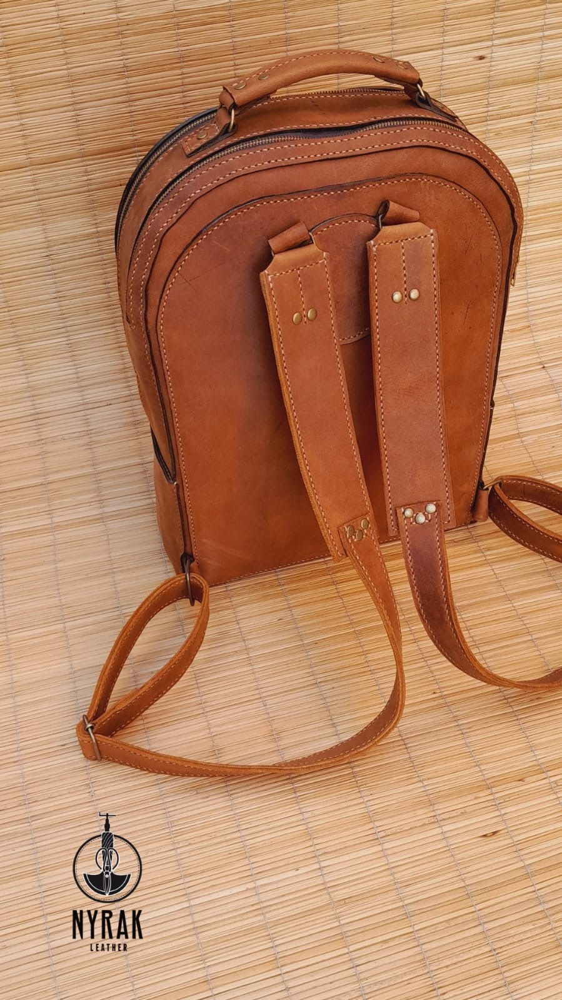
The Explorer Backpack
Structured twin-zip backpack in tan full-grain, tooled spine motif, adjustable shoulder straps and a top carry handle.
Enquire on WhatsApp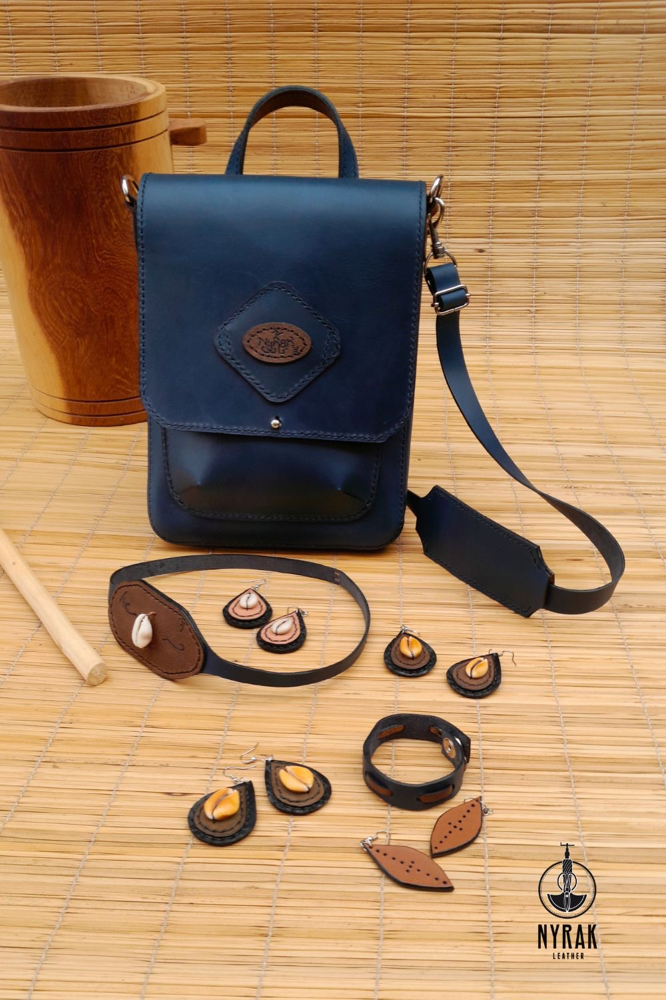
Leather that carries a lineage.
Every piece is cut, tooled and saddle-stitched by hand from full-grain hide — finished with cowrie and a hand-burned motif. No two are ever the same.
NyRak Leather is slow leatherwork in the African grain. We start with full-grain hide — the strongest, most honest cut — and let the maker's hand do the rest: cut, bevel, burnish, stitch. The saddle stitch you see is sewn one needle at a time, so it never unravels the way a machine seam does.
Our mark is the cowrie and the hand-burned glyph — old currency and old language, carried forward on pieces built to outlast the trend that inspired them.
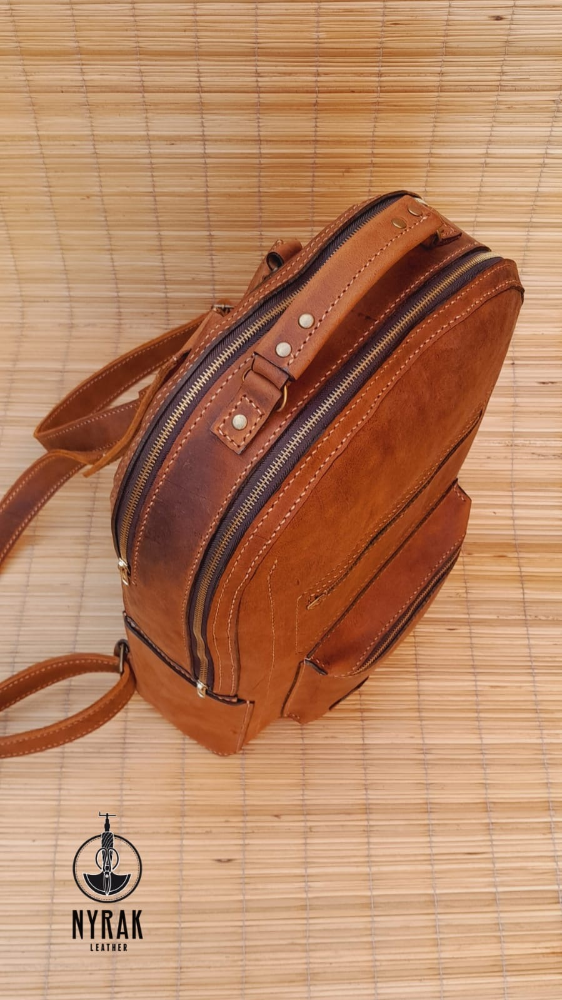
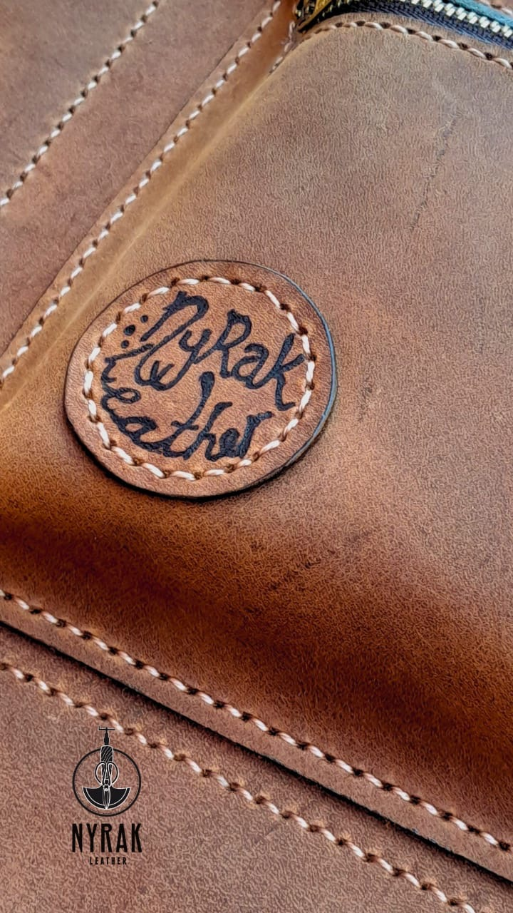
Made to order. Tap a piece to start it on WhatsApp — colour and sizing are yours to choose.

Structured twin-zip backpack in tan full-grain, tooled spine motif, adjustable shoulder straps and a top carry handle.
Enquire on WhatsApp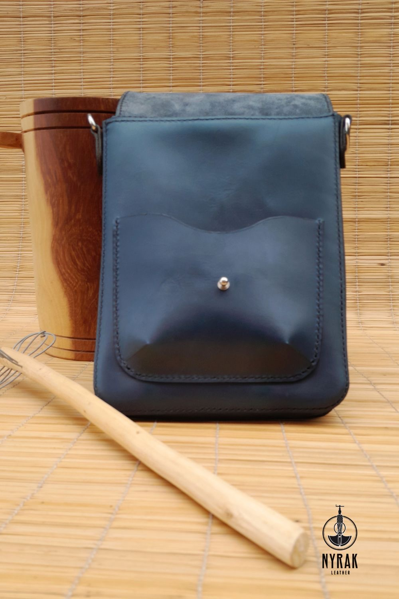
Deep indigo crossbody with hand-signed flap and adjustable strap.
Enquire on WhatsApp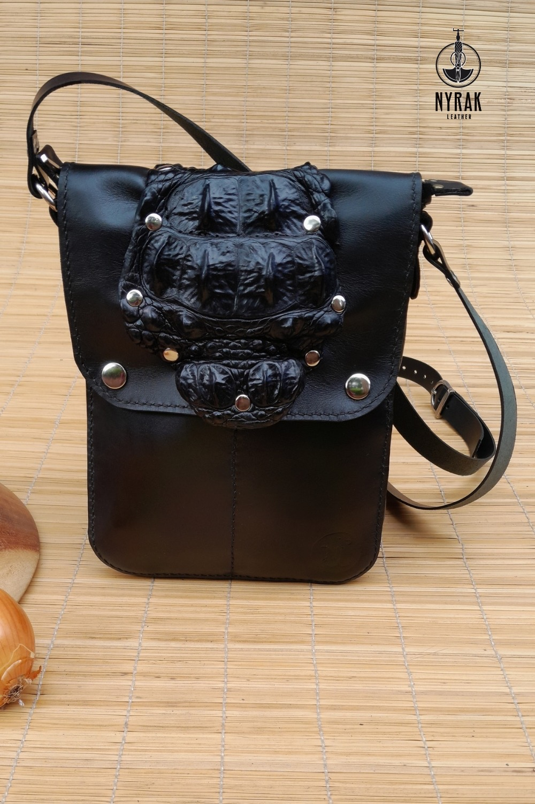
Jet-black crossbody with a sculpted croc-textured flap and dome studs.
Enquire on WhatsApp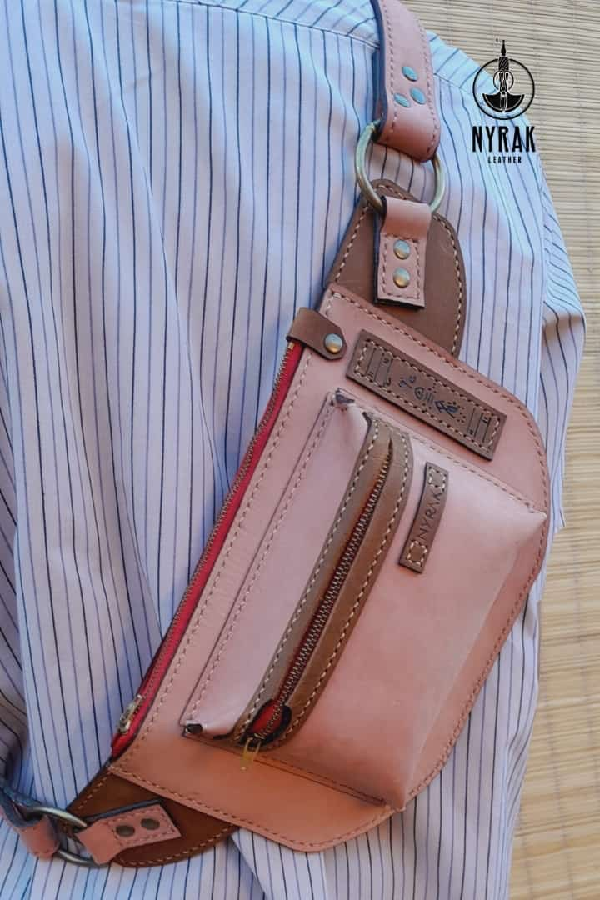
Sling it at the hip or across the chest. Rose-dyed hide, zip pocket, tooled name tag and a fully adjustable strap.
Enquire on WhatsApp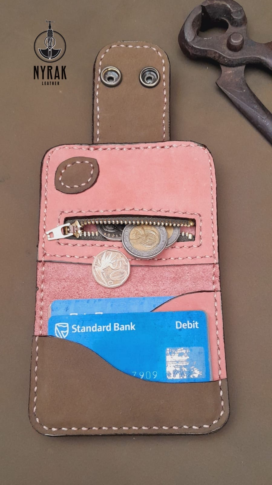
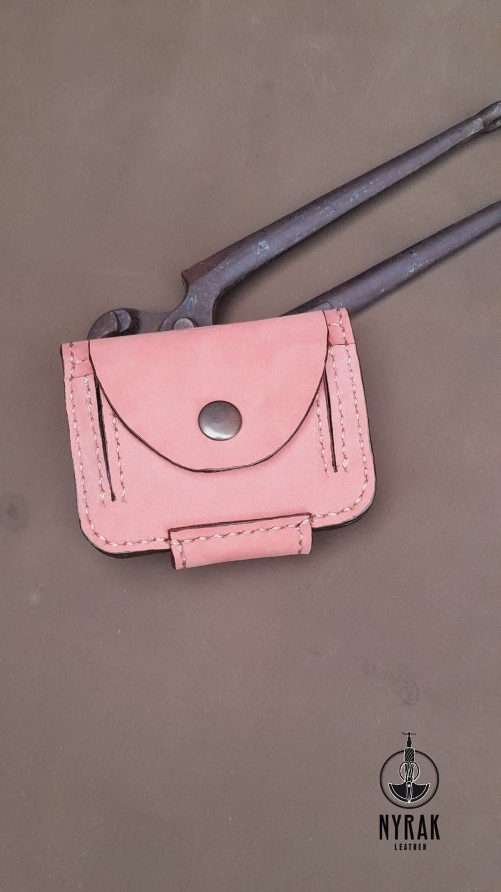
Hand-cut leather earrings, cuff and choker set with real cowrie shells — the old currency, worn new.
Enquire on WhatsAppMachines make many. Hands make one at a time — and it shows in the burnished edges, the even saddle stitch, and the signed maker's mark on the inside of each piece.
Every piece is signed by hand and stitched in, not printed on.
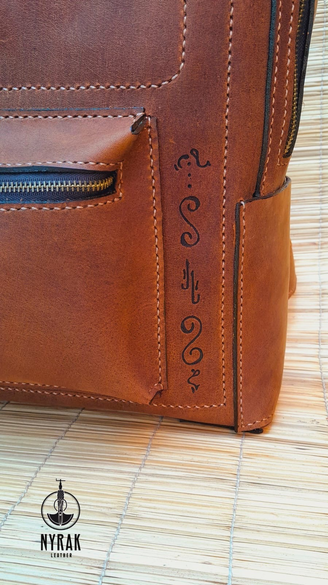
A hand-burned motif runs the seam — old language on new leather.
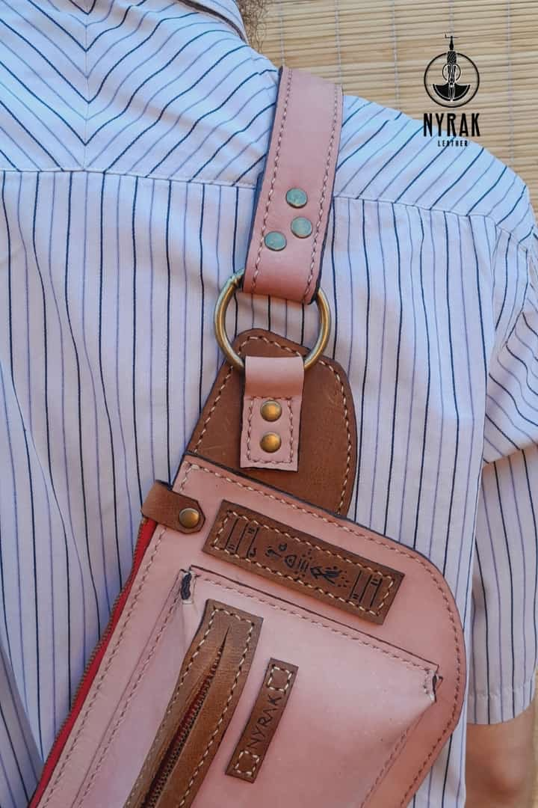
Saddle-stitched with waxed thread and solid rings that take the weight.
NyRak Leather is a small workshop where every piece is cut, dyed and stitched to order. Meet the people who cut, dye and stitch every order.
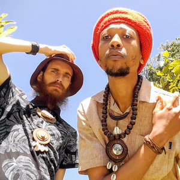
Two makers, one workshop. Kameron and BaKaNtu cut, dye and hand-stitch every piece to order — so the bag you carry was made by the people you can talk to.
Tell us the piece, the colour and the size. We'll confirm the price and lead time on WhatsApp, then make it by hand — just for you.